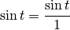
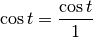
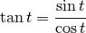
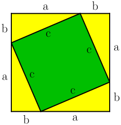
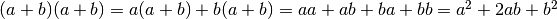
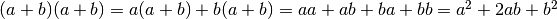

Proofs and Explanations¶
I used a bunch of spooky formulas in this tutorial. Some of them are
definitions of e.g.  or
or  , but in this chapter we’ll focus on those
that aren’t and prove that they actually work.
, but in this chapter we’ll focus on those
that aren’t and prove that they actually work.
Two ways to define sine and cosine¶
In the unit circle trig section we defined and
with a unit circle, but then in
the triangle trig section we defined them in a triangle.
These definitions are actually compatible with each other. If we draw a picture
like this…
…and apply the triangle stuff to the angle  , we get this:
, we get this:



The first two formulas are obviously true with any , but the last one is a
bit more interesting. Actually we found another way to define  , and we
can also show that it works with a triangle:
, and we
can also show that it works with a triangle:


Pythagorean Theorem¶
This is a well-known proof and I like it because it’s simple.
We can calculate the total area of the above square in a couple different ways:
- The square’s sides are each
 , so the area must be
.
, so the area must be
. - The square consists of the green square whose area is
 and 4 yellow
triangles with area
and 4 yellow
triangles with area  each.
each.
We must get the same area with both ways, so we get this equation: